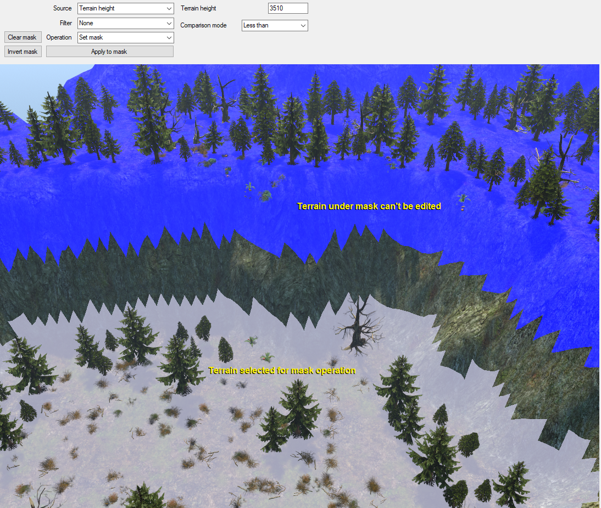
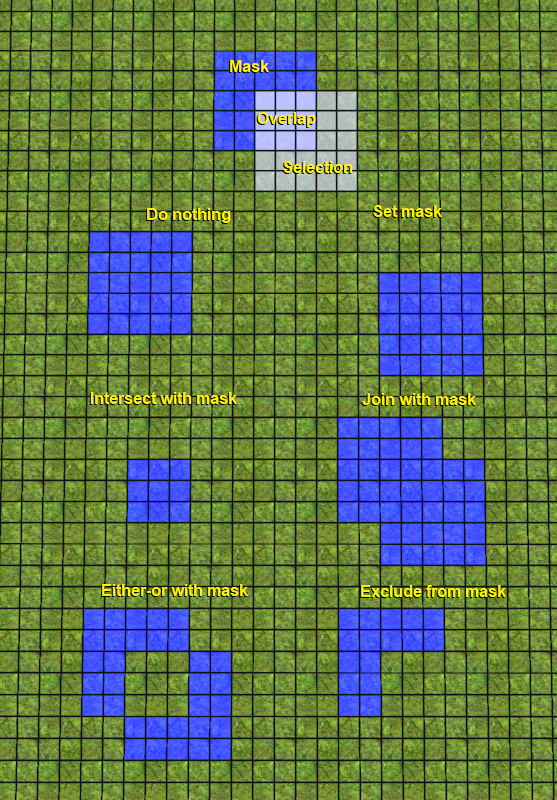
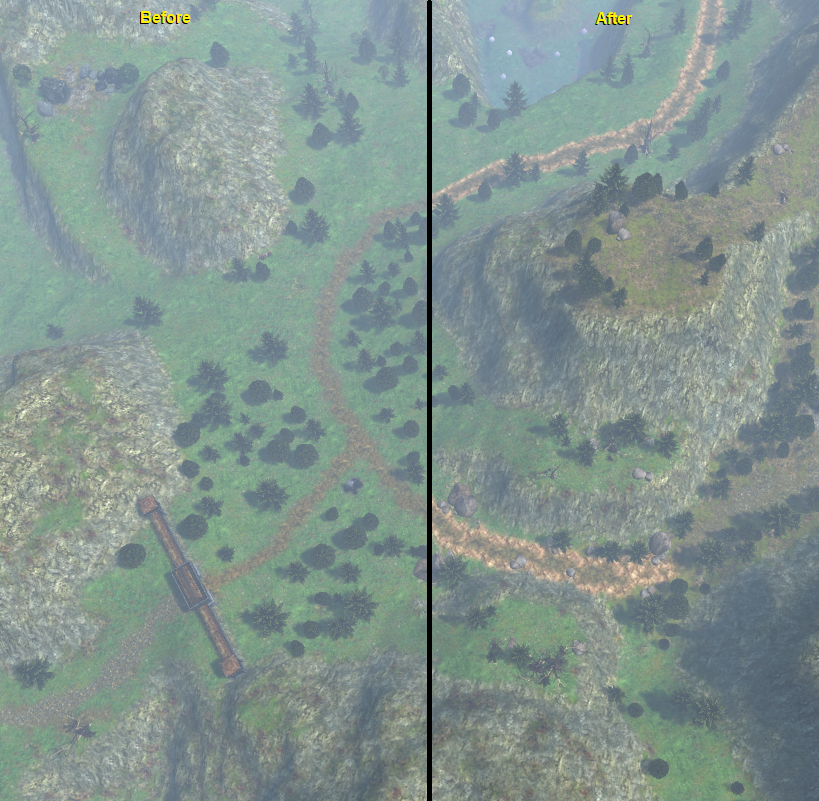

Map Editor - Mask/selection mode
To aid in precise editing of terrain features, Map Editor comes with mask layer editor. Terrain heights, lakes, flags, textures and decorations can't be affected if the terrain that's being modified is masked.
To modify mask, select selection source, selection filter and mask operation, and then press Apply to mask button.
You can also quickly clear mask with Clear mask button, and invert it using Invert mask button.
Undo/redo does not work on mask or selection.

Selection source
Selection source controls which parts of terrain are selected. Currently available sources are:
- All - all terrain becomes selected.
- Paint - you can manually select parts of terrain if this selection source is enabled. Brush settings apply to this mode.
- Mask - terrain under current mask becomes selected.
- Terrain texture - terrain with specified texture ID is selected. You can use right mouse button to pick terrain texture from the terrain.
- Terrain height - terrain at specified height is selected. You can use right mouse button to pick terrain height from the terrain. Comparison mode specifies which parts of the terrain become selected:
- Equal - only terrain of exactly specified height is selected
- Greater or equal - terrain is selected if its height is greater or equal than the specified height
- Greater than - terrain is selected if its height is greater than the specified height
- Not equal - terrain is selected if its height is not equal to the specified height
- Less than - terrain is selected if its height is less than the specified height
- Less or equal - terrain is selected if its height is less or equal than the specified height
- Terrain slope - terrain with specified slope is selected. You can use right mouse button to pick terrain slope from the terrain. Comparison mode applies in this mode.
- Terrain attribute - terrain is selected based on specified attribute. Currently available attributes are:
- Terrain block - all terrain with a texture that blocks movement is selected.
- Object block - all terrain of which movement is blocked by an object is selected.
- Building block - all terrain of which movement is blocked by a building is selected.
- Manual block - all terrain of which movement is blocked by manually placed movement flag is selected.
- Lake - all terrain that is under water is selected. Depth and comparison mode for depth further specify the selection. You can use right mouse button to pick depth from the terrain under water. Ocean is not treated as water for the purpose of this attribute.
- Shore - all terrain that surrounds water is selected. Ocean is not treated as water for the purpose of this attribute.
- Feature - terrain is selected based on selected feature. Use left mouse button to pick a feature from the map, and right mouse button to deselect it. Currently available features are:
- Building - terrain blocked by selected building is selected.
- Object - terrain blocked by selected object is selected. You can use any object, including monuments, portals and bindstones.
- Lake - terrain under selected lake is selected. Depth and comparison mode for depth further specify the selection. You can use right mouse button to pick depth from the terrain under water.
- Walkable - upon picking terrain, all terrain that can be walked from selected position unobstructed by movement block will be selected.
Selection filter
After selecting a source, you can further modify selection using a filter. Currently available filters are:
- None - no filter is applied to the selection.
- Border - only the border of selection passes this filter. Outer border selects terrain outside of the current selection, Inner border selects terrain that's the closest to outside of the current selection.
- Random - current selection is passed through random check filter and only the terrain that passes the check remains selected. Percentage specifies the relative amount of cells that survive the check. This check is consistent - for example, cells that pass the 25% random check will always pass the 50% random check. Randomize button randomizes which cells pass the check.
Mask operation
Mask operation modifies the mask based on current selection and the type of selected operation. Currently available operations are:
- Do nothing - nothing happens.
- Set mask - current mask is cleared and replaced with current selection.
- Intersect with mask - only terrain that is both under the mask and selected stays under the mask.
- Join with mask - current selection is added to current mask.
- Either-or with mask - if terrain is under current mask and not selected, it stays under mask; if terrain is selected and not under mask, it is added to current mask; all other terrain is removed from the current mask.
- Exclude from mask - current selection is removed from current mask.

Example usage
Paint terrain around the road
- Paint rough outline using Paint source, no filter and Set mask operation
- Select road using Terrain texture source and road texture ID, no filter and Intersect with mask operation
- Select terrain around road using Mask source, Border filter (outer border) and Set mask operation
- Click Invert mask
- Paint over selected terrain in Textures editor mode (Shift + LMB with selected tile)
